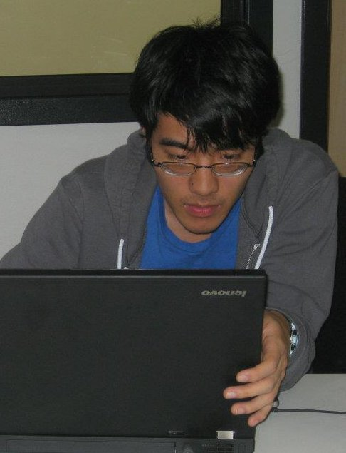

Edward Zhang
B.S.E. Computer Science
|  |
I'm an undergraduate at Princeton University majoring in Computer
Science. I'm also an active musician and wannabe composer.
I've done work in computer music and HCI; recently I've become interested in augmented reality and the HCI aspects of 3D interfaces. I'm also an avid algorithmist, enjoying the challenges of ProjectEuler and the ACM ICPC. I was a competitor at the 2011 ACM ICPC World Finals in Florida. I'm very active in Princeton's Computer Science community, as a member of the Undergraduate CS Council as well as the President of the Princeton ACM Student Chapter |